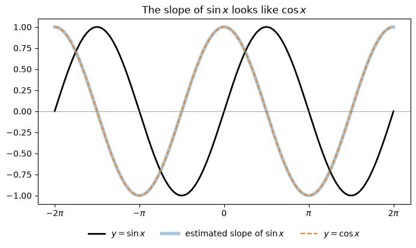
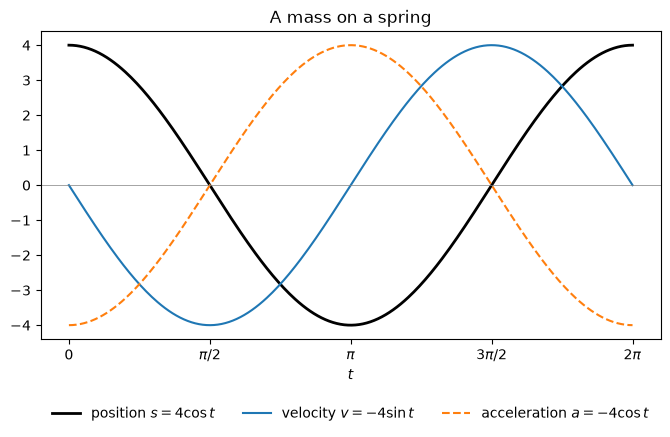

Code
import numpy as np
import sympy as sp
import matplotlib.pyplot as plt
from IPython.display import Math, display
sp.init_printing()
x, t, h, theta = sp.symbols("x t h theta")Miraj Samarakkody
October 29, 2026
Stewart, Calculus, 9th ed., §3.3
Learning objectives. By the end of this lecture you should be able to: 1. Explain the two key limits \(\displaystyle\lim_{\theta\to0}\frac{\sin\theta}{\theta} = 1\) and \(\displaystyle\lim_{\theta\to0}\frac{\cos\theta - 1}{\theta} = 0\), and why they need radians. 2. Derive \(\dfrac{d}{dx}(\sin x) = \cos x\) and \(\dfrac{d}{dx}(\cos x) = -\sin x\) from the limit definition. 3. Use the Quotient Rule to find the derivatives of \(\tan x\), \(\cot x\), \(\sec x\), and \(\csc x\). 4. Apply these formulas to products, quotients, higher derivatives, and simple harmonic motion. 5. Evaluate trigonometric limits by reducing them to \(\dfrac{\sin\theta}{\theta}\). 6. Check every answer symbolically with SymPy and numerically with NumPy.
From §3.1 and §3.2 we can differentiate:
| Function | Derivative |
|---|---|
| \(c\) | \(0\) |
| \(x^n\) | \(n x^{n-1}\) |
| \(e^x\) | \(e^x\) |
| \(c\,f \pm g\) | \(c\,f' \pm g'\) |
| \(f\,g\) | \(f g' + g f'\) |
| \(\dfrac{f}{g}\) | \(\dfrac{g f' - f g'}{g^2}\) |
In this section we add the six trigonometric functions. Throughout, angles are measured in radians.
As before, the helper below compares a derivative found by hand with SymPy’s answer.
Before proving anything, let’s estimate the slope of \(y = \sin x\) at many points and plot it. The slope is \(1\) at \(x = 0\), \(0\) at the peaks and troughs, and \(-1\) at \(x = \pi\). That pattern looks like \(\cos x\).
xs = np.linspace(-2 * np.pi, 2 * np.pi, 400)
slopes = np.gradient(np.sin(xs), xs) # numerical estimate of the slope
fig, ax = plt.subplots(figsize=(8, 4))
ax.plot(xs, np.sin(xs), "k", lw=2, label=r"$y = \sin x$")
ax.plot(xs, slopes, lw=4, alpha=0.4, label=r"estimated slope of $\sin x$")
ax.plot(xs, np.cos(xs), "--", lw=1.5, label=r"$y = \cos x$")
ax.axhline(0, color="gray", lw=0.5)
ax.set_xticks(np.arange(-2, 3) * np.pi, [r"$-2\pi$", r"$-\pi$", "0", r"$\pi$", r"$2\pi$"])
ax.legend(loc="upper center", bbox_to_anchor=(0.5, -0.1), ncol=3, frameon=False)
ax.set_title(r"The slope of $\sin x$ looks like $\cos x$")
plt.show()
To prove the guess, we need two limits.
Limit 1. \[\boxed{\lim_{\theta\to0}\frac{\sin\theta}{\theta} = 1}\]
Proof (squeeze). Take \(0 < \theta < \pi/2\) and a unit circle. Comparing the areas of the small triangle, the circular sector, and the large triangle that share the angle \(\theta\) gives \[\tfrac12\sin\theta \;<\; \tfrac12\theta \;<\; \tfrac12\tan\theta.\] Divide by \(\tfrac12\sin\theta > 0\) and take reciprocals: \[\cos\theta \;<\; \frac{\sin\theta}{\theta} \;<\; 1.\] As \(\theta\to0^+\), \(\cos\theta\to1\), so by the Squeeze Theorem \(\dfrac{\sin\theta}{\theta}\to1\). The function \(\dfrac{\sin\theta}{\theta}\) is even, so the left-hand limit is also \(1\). \(\blacksquare\)
Limit 2. \[\boxed{\lim_{\theta\to0}\frac{\cos\theta - 1}{\theta} = 0}\]
Proof. Multiply the numerator and denominator by \(\cos\theta + 1\) and use \(\cos^2\theta - 1 = -\sin^2\theta\): \[\frac{\cos\theta - 1}{\theta} = \frac{-\sin^2\theta}{\theta(\cos\theta+1)} = -\frac{\sin\theta}{\theta}\cdot\frac{\sin\theta}{\cos\theta + 1} \;\xrightarrow{\theta\to0}\; -1\cdot\frac{0}{2} = 0. \qquad\blacksquare\]
A table of values supports both limits:
print(f"{'theta':>10} {'sin(θ)/θ':>14} {'(cos(θ)-1)/θ':>16}")
for th in [1, 0.5, 0.1, 0.01, 0.001]:
print(f"{th:>10} {np.sin(th) / th:>14.10f} {(np.cos(th) - 1) / th:>16.10f}")
print()
print("SymPy: lim sin(θ)/θ =", sp.limit(sp.sin(theta) / theta, theta, 0))
print("SymPy: lim (cos(θ)-1)/θ =", sp.limit((sp.cos(theta) - 1) / theta, theta, 0)) theta sin(θ)/θ (cos(θ)-1)/θ
1 0.8414709848 -0.4596976941
0.5 0.9588510772 -0.2448348762
0.1 0.9983341665 -0.0499583472
0.01 0.9999833334 -0.0049999583
0.001 0.9999998333 -0.0005000000
SymPy: lim sin(θ)/θ = 1
SymPy: lim (cos(θ)-1)/θ = 0Why radians? The proof used the fact that a sector of angle \(\theta\) in a unit circle has area \(\tfrac12\theta\), which is true only when \(\theta\) is in radians. If \(\theta\) is in degrees, then \(\sin(\theta^\circ) = \sin\!\left(\tfrac{\pi\theta}{180}\right)\) and \[\lim_{\theta\to0}\frac{\sin(\theta^\circ)}{\theta} = \frac{\pi}{180} \approx 0.01745.\] Every derivative formula below would pick up an ugly factor of \(\pi/180\).
Derivative of sine. \[\boxed{\frac{d}{dx}(\sin x) = \cos x}\]
Proof. Use the addition formula \(\sin(x+h) = \sin x\cos h + \cos x\sin h\): \[\frac{\sin(x+h) - \sin x}{h} = \sin x\cdot\frac{\cos h - 1}{h} + \cos x\cdot\frac{\sin h}{h} \;\xrightarrow{h\to0}\; \sin x\cdot 0 + \cos x\cdot 1 = \cos x. \qquad\blacksquare\]
Derivative of cosine. \[\boxed{\frac{d}{dx}(\cos x) = -\sin x}\]
Proof. Use \(\cos(x+h) = \cos x\cos h - \sin x\sin h\): \[\frac{\cos(x+h) - \cos x}{h} = \cos x\cdot\frac{\cos h - 1}{h} - \sin x\cdot\frac{\sin h}{h} \;\xrightarrow{h\to0}\; \cos x\cdot 0 - \sin x\cdot 1 = -\sin x. \qquad\blacksquare\]
SymPy can take the limit of the difference quotient directly:
\(\displaystyle \lim_{h\to0} \frac{- \sin{\left(x \right)} + \sin{\left(h + x \right)}}{h} = \cos{\left(x \right)}\)
\(\displaystyle \lim_{h\to0} \frac{- \cos{\left(x \right)} + \cos{\left(h + x \right)}}{h} = - \sin{\left(x \right)}\)
Example 1. Differentiate \(y = x^2\sin x\).
By hand (Product Rule). \[y' = x^2\,\frac{d}{dx}(\sin x) + \sin x\,\frac{d}{dx}(x^2) = x^2\cos x + 2x\sin x.\]
The remaining four functions are quotients of \(\sin\) and \(\cos\), so the Quotient Rule does the work.
Tangent. \[\frac{d}{dx}(\tan x) = \frac{d}{dx}\left(\frac{\sin x}{\cos x}\right) = \frac{\cos x\cdot\cos x - \sin x\cdot(-\sin x)}{\cos^2 x} = \frac{\cos^2 x + \sin^2 x}{\cos^2 x} = \frac{1}{\cos^2 x} = \sec^2 x.\]
Secant. \[\frac{d}{dx}(\sec x) = \frac{d}{dx}\left(\frac{1}{\cos x}\right) = \frac{\cos x\cdot 0 - 1\cdot(-\sin x)}{\cos^2 x} = \frac{1}{\cos x}\cdot\frac{\sin x}{\cos x} = \sec x\tan x.\]
The derivatives of \(\cot x\) and \(\csc x\) follow the same way (try them!).
Derivatives of trigonometric functions.
| \(f(x)\) | \(f'(x)\) | \(f(x)\) | \(f'(x)\) | |
|---|---|---|---|---|
| \(\sin x\) | \(\cos x\) | \(\csc x\) | \(-\csc x\cot x\) | |
| \(\cos x\) | \(-\sin x\) | \(\sec x\) | \(\sec x\tan x\) | |
| \(\tan x\) | \(\sec^2 x\) | \(\cot x\) | \(-\csc^2 x\) |
Memory aid: the functions whose names start with “c” (cosine, cosecant, cotangent) have a minus sign in their derivatives. Each “co-” formula comes from the matching formula by swapping every function with its co-function and adding a minus sign.
Example 2. Differentiate \(f(x) = \dfrac{\sec x}{1 + \tan x}\). For which values of \(x\) does the graph of \(f\) have a horizontal tangent?
By hand (Quotient Rule). \[f'(x) = \frac{(1+\tan x)\sec x\tan x - \sec x\cdot\sec^2 x}{(1+\tan x)^2} = \frac{\sec x\,(\tan x + \tan^2 x - \sec^2 x)}{(1+\tan x)^2} = \frac{\sec x\,(\tan x - 1)}{(1+\tan x)^2},\] using \(\sec^2 x = \tan^2 x + 1\).
Since \(\sec x\) is never \(0\), \(f'(x) = 0\) exactly when \(\tan x = 1\), that is, at \(x = n\pi + \dfrac{\pi}{4}\) for any integer \(n\).
f = sp.sec(x) / (1 + sp.tan(x))
df = sp.diff(f, x)
# the derivative, raw and simplified
display(Math(rf"f'(x) = {sp.latex(df)}"))
display(Math(rf"f'(x) = {sp.latex(sp.factor(sp.simplify(df)))}"))
# horizontal tangents on [0, 2π)
roots = sp.solveset(sp.tan(x) - 1, x, sp.Interval.Ropen(0, 2 * sp.pi))
display(Math(rf"\tan x = 1 \text{{ on }} [0, 2\pi): \quad x \in {sp.latex(roots)}"))
values = [sp.simplify(df.subs(x, r)) for r in roots]
display(Math(", \\quad ".join(rf"f'\left({sp.latex(r)}\right) = {sp.latex(v)}"
for r, v in zip(roots, values))))\(\displaystyle f'(x) = \frac{\tan{\left(x \right)} \sec{\left(x \right)}}{\tan{\left(x \right)} + 1} + \frac{\left(- \tan^{2}{\left(x \right)} - 1\right) \sec{\left(x \right)}}{\left(\tan{\left(x \right)} + 1\right)^{2}}\)
\(\displaystyle f'(x) = \frac{\left(\tan{\left(x \right)} - 1\right) \sec{\left(x \right)}}{\left(\tan{\left(x \right)} + 1\right)^{2}}\)
\(\displaystyle \tan x = 1 \text{ on } [0, 2\pi): \quad x \in \left\{\frac{\pi}{4}, \frac{5 \pi}{4}\right\}\)
\(\displaystyle f'\left(\frac{\pi}{4}\right) = 0, \quad f'\left(\frac{5 \pi}{4}\right) = 0\)
Example 3 (simple harmonic motion). An object at the end of a vertical spring is stretched \(4\) cm beyond its rest position and released at time \(t = 0\). Its position at time \(t\) is \[s = f(t) = 4\cos t.\] Find the velocity and acceleration at time \(t\), and use them to describe the motion.
By hand. \[v = \frac{ds}{dt} = -4\sin t, \qquad a = \frac{dv}{dt} = -4\cos t.\]
Interpretation. - The object moves between \(s = 4\) and \(s = -4\), with period \(2\pi\). - The speed \(|v| = 4|\sin t|\) is largest when \(\cos t = 0\), that is, as the object passes through its rest position \(s = 0\). - \(a = -s\): the acceleration always points back toward the rest position and is largest at the ends of the motion, where the spring is stretched or compressed the most.
for f in [sp.sin(x), sp.cos(x), sp.tan(x), sp.csc(x), sp.sec(x), sp.cot(x)]:
display(Math(rf"\frac{{d}}{{dx}}{sp.latex(f)} = {sp.latex(sp.diff(f, x))}"))
ts = np.linspace(0, 2 * np.pi, 300)
fig, ax = plt.subplots(figsize=(8, 4))
ax.plot(ts, 4 * np.cos(ts), "k", lw=2, label=r"position $s = 4\cos t$")
ax.plot(ts, -4 * np.sin(ts), lw=1.5, label=r"velocity $v = -4\sin t$")
ax.plot(ts, -4 * np.cos(ts), "--", lw=1.5, label=r"acceleration $a = -4\cos t$")
ax.axhline(0, color="gray", lw=0.5)
ax.set_xticks(np.arange(5) * np.pi / 2, ["0", r"$\pi/2$", r"$\pi$", r"$3\pi/2$", r"$2\pi$"])
ax.set_xlabel("$t$")
ax.legend(loc="upper center", bbox_to_anchor=(0.5, -0.18), ncol=3, frameon=False)
ax.set_title("A mass on a spring")
plt.show()\(\displaystyle \frac{d}{dx}\sin{\left(x \right)} = \cos{\left(x \right)}\)
\(\displaystyle \frac{d}{dx}\cos{\left(x \right)} = - \sin{\left(x \right)}\)
\(\displaystyle \frac{d}{dx}\tan{\left(x \right)} = \tan^{2}{\left(x \right)} + 1\)
\(\displaystyle \frac{d}{dx}\csc{\left(x \right)} = - \cot{\left(x \right)} \csc{\left(x \right)}\)
\(\displaystyle \frac{d}{dx}\sec{\left(x \right)} = \tan{\left(x \right)} \sec{\left(x \right)}\)
\(\displaystyle \frac{d}{dx}\cot{\left(x \right)} = - \cot^{2}{\left(x \right)} - 1\)

Example 4. Find the 27th derivative of \(\cos x\).
By hand. The derivatives of \(\cos x\) repeat in a cycle of four: \[f(x) = \cos x,\quad f'(x) = -\sin x,\quad f''(x) = -\cos x,\quad f^{\prime\prime\prime}(x) = \sin x,\quad f^{(4)}(x) = \cos x, \;\ldots\] So \(f^{(n)}(x) = \cos x\) whenever \(n\) is a multiple of \(4\). Since \(27 = 4\cdot 6 + 3\), \[\frac{d^{27}}{dx^{27}}(\cos x) = \frac{d^{3}}{dx^{3}}(\cos x) = \sin x.\]
\(\displaystyle f^{(0)}(x) = \cos{\left(x \right)}\)
\(\displaystyle f^{(1)}(x) = - \sin{\left(x \right)}\)
\(\displaystyle f^{(2)}(x) = - \cos{\left(x \right)}\)
\(\displaystyle f^{(3)}(x) = \sin{\left(x \right)}\)
\(\displaystyle f^{(4)}(x) = \cos{\left(x \right)}\)
\(\displaystyle f^{(5)}(x) = - \sin{\left(x \right)}\)
\(\displaystyle f^{(6)}(x) = - \cos{\left(x \right)}\)
\(\displaystyle f^{(7)}(x) = \sin{\left(x \right)}\)
\(\displaystyle f^{(8)}(x) = \cos{\left(x \right)}\)
\(\displaystyle f^{(27)}(x) = \sin{\left(x \right)}\)
Limit 1 is useful well beyond proving derivative formulas. The trick is to make the argument of \(\sin\) match the denominator.
Example 5. Find \(\displaystyle\lim_{x\to0}\frac{\sin 7x}{4x}\).
By hand. Multiply and divide by \(7\), and let \(\theta = 7x\) (so \(\theta\to0\) as \(x\to0\)): \[\lim_{x\to0}\frac{\sin 7x}{4x} = \frac74\lim_{x\to0}\frac{\sin 7x}{7x} = \frac74\lim_{\theta\to0}\frac{\sin\theta}{\theta} = \frac74\cdot 1 = \frac74.\]
Note: \(\sin 7x \neq 7\sin x\), so we cannot just cancel the \(7\).
Example 6. Find \(\displaystyle\lim_{x\to0} x\cot x\).
By hand. Write \(\cot x = \dfrac{\cos x}{\sin x}\) and divide the numerator and denominator by \(x\): \[\lim_{x\to0} x\cot x = \lim_{x\to0}\frac{\cos x}{\dfrac{\sin x}{x}} = \frac{\lim_{x\to0}\cos x}{\lim_{x\to0}\dfrac{\sin x}{x}} = \frac{1}{1} = 1.\]
for expr, by_hand in [(sp.sin(7*x) / (4*x), sp.Rational(7, 4)), (x * sp.cot(x), 1)]:
lim = sp.limit(expr, x, 0)
display(Math(rf"\lim_{{x\to0}} {sp.latex(expr)} = {sp.latex(lim)}"))
print("Agrees with by-hand answer:", lim == by_hand)
fn = sp.lambdify(x, expr, "numpy")
print(" numeric:", ", ".join(f"x={xv:g}: {fn(xv):.6f}" for xv in [0.1, 0.01, 0.001]))\(\displaystyle \lim_{x\to0} \frac{\sin{\left(7 x \right)}}{4 x} = \frac{7}{4}\)
Agrees with by-hand answer: True
numeric: x=0.1: 1.610544, x=0.01: 1.748571, x=0.001: 1.749986\(\displaystyle \lim_{x\to0} x \cot{\left(x \right)} = 1\)
Agrees with by-hand answer: True
numeric: x=0.1: 0.996664, x=0.01: 0.999967, x=0.001: 1.000000As in §3.2, we compare each by-hand derivative with a central difference \(\dfrac{f(x+h) - f(x-h)}{2h}\) at many points. We use the interval \([0.2, 1.3]\), which avoids the vertical asymptotes of \(\tan x\) and \(\sec x\) at \(x = \pi/2 \approx 1.57\).
def numeric_check(f, fprime, a=0.2, b=1.3, step=1e-5):
fn, dfn = sp.lambdify(x, f, "numpy"), sp.lambdify(x, fprime, "numpy")
xs = np.linspace(a, b, 200)
approx = (fn(xs + step) - fn(xs - step)) / (2 * step)
exact = dfn(xs)
return np.max(np.abs(approx - exact)) / np.max(np.abs(exact))
tests = {
r"\sin x": (sp.sin(x), sp.cos(x)),
r"\cos x": (sp.cos(x), -sp.sin(x)),
r"\tan x": (sp.tan(x), sp.sec(x)**2),
r"\csc x": (sp.csc(x), -sp.csc(x) * sp.cot(x)),
r"\sec x": (sp.sec(x), sp.sec(x) * sp.tan(x)),
r"\cot x": (sp.cot(x), -sp.csc(x)**2),
r"x^2 \sin x": (x**2 * sp.sin(x), x**2 * sp.cos(x) + 2*x * sp.sin(x)),
r"\frac{\sec x}{1 + \tan x}": (sp.sec(x) / (1 + sp.tan(x)),
sp.sec(x) * (sp.tan(x) - 1) / (1 + sp.tan(x))**2),
}
for name, (f, fp) in tests.items():
rel = numeric_check(f, fp)
display(Math(rf"{name}: \quad \text{{relative error}} \approx {rel:.1e}"))\(\displaystyle \sin x: \quad \text{relative error} \approx 2.2e-11\)
\(\displaystyle \cos x: \quad \text{relative error} \approx 2.3e-11\)
\(\displaystyle \tan x: \quad \text{relative error} \approx 1.3e-09\)
\(\displaystyle \csc x: \quad \text{relative error} \approx 2.5e-09\)
\(\displaystyle \sec x: \quad \text{relative error} \approx 1.4e-09\)
\(\displaystyle \cot x: \quad \text{relative error} \approx 2.5e-09\)
\(\displaystyle x^2 \sin x: \quad \text{relative error} \approx 3.2e-11\)
\(\displaystyle \frac{\sec x}{1 + \tan x}: \quad \text{relative error} \approx 1.3e-10\)
Try these by hand first, then run the cell below to check.
problems = [
(3*sp.sin(x) - 2*sp.cos(x), x),
(sp.exp(x) * sp.cos(x), x),
(sp.sin(x) / (1 + sp.cos(x)), x),
(theta * sp.cos(theta) * sp.sin(theta), theta),
]
for i, (f, var) in enumerate(problems, 1):
df = sp.diff(f, var)
df = sp.trigsimp(sp.simplify(df)) if i == 3 else df
display(Math(rf"\text{{{i}.}}\quad \frac{{d}}{{d{sp.latex(var)}}}\left({sp.latex(f)}\right) = {sp.latex(df)}"))
# 5. tangent line
y = sp.sec(x)
m = sp.diff(y, x).subs(x, sp.pi / 3)
display(Math(rf"\text{{5.}}\quad y = 2 + {sp.latex(m)}\left(x - \frac{{\pi}}{{3}}\right)"))
# 6. limits
l1 = sp.limit(sp.sin(3*x) / sp.sin(5*x), x, 0)
l2 = sp.limit(sp.sin(x**2) / x, x, 0)
display(Math(rf"\text{{6.}}\quad {sp.latex(l1)}, \qquad {sp.latex(l2)}"))
# 7. 99 = 4·24 + 3
display(Math(rf"\text{{7.}}\quad {sp.latex(sp.diff(sp.sin(x), x, 99))}"))\(\displaystyle \text{1.}\quad \frac{d}{dx}\left(3 \sin{\left(x \right)} - 2 \cos{\left(x \right)}\right) = 2 \sin{\left(x \right)} + 3 \cos{\left(x \right)}\)
\(\displaystyle \text{2.}\quad \frac{d}{dx}\left(e^{x} \cos{\left(x \right)}\right) = - e^{x} \sin{\left(x \right)} + e^{x} \cos{\left(x \right)}\)
\(\displaystyle \text{3.}\quad \frac{d}{dx}\left(\frac{\sin{\left(x \right)}}{\cos{\left(x \right)} + 1}\right) = \frac{1}{\cos{\left(x \right)} + 1}\)
\(\displaystyle \text{4.}\quad \frac{d}{d\theta}\left(\theta \sin{\left(\theta \right)} \cos{\left(\theta \right)}\right) = - \theta \sin^{2}{\left(\theta \right)} + \theta \cos^{2}{\left(\theta \right)} + \sin{\left(\theta \right)} \cos{\left(\theta \right)}\)
\(\displaystyle \text{5.}\quad y = 2 + 2 \sqrt{3}\left(x - \frac{\pi}{3}\right)\)
\(\displaystyle \text{6.}\quad \frac{3}{5}, \qquad 0\)
\(\displaystyle \text{7.}\quad - \cos{\left(x \right)}\)
| \(f(x)\) | \(f'(x)\) | \(f(x)\) | \(f'(x)\) | |
|---|---|---|---|---|
| \(\sin x\) | \(\cos x\) | \(\csc x\) | \(-\csc x\cot x\) | |
| \(\cos x\) | \(-\sin x\) | \(\sec x\) | \(\sec x\tan x\) | |
| \(\tan x\) | \(\sec^2 x\) | \(\cot x\) | \(-\csc^2 x\) |
Two key limits (with \(\theta\) in radians): \[\lim_{\theta\to0}\frac{\sin\theta}{\theta} = 1 \qquad\qquad \lim_{\theta\to0}\frac{\cos\theta - 1}{\theta} = 0\]
Key ideas. - The derivative formulas hold only when angles are measured in radians. - \(\sin\) and \(\cos\) come from the limit definition and the addition formulas; the other four come from the Quotient Rule. - The “co-” functions have minus signs in their derivatives. - Derivatives of \(\sin x\) and \(\cos x\) repeat every four steps, so reduce \(n\) modulo \(4\) for high derivatives. - For limits like \(\dfrac{\sin kx}{x}\), rewrite them so the argument of \(\sin\) matches the denominator.
Previous: §3.2 The Product and Quotient Rules.
Next: §3.4 The Chain Rule.